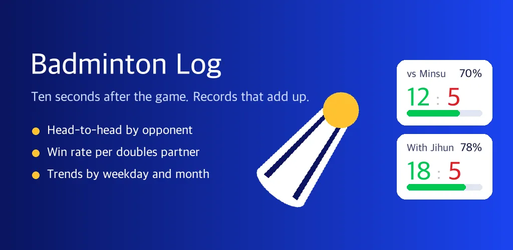
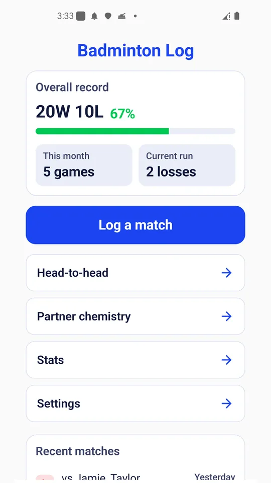
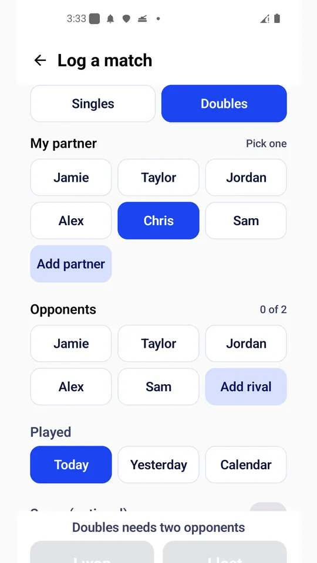
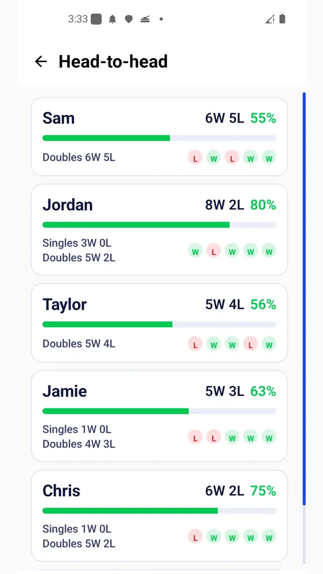
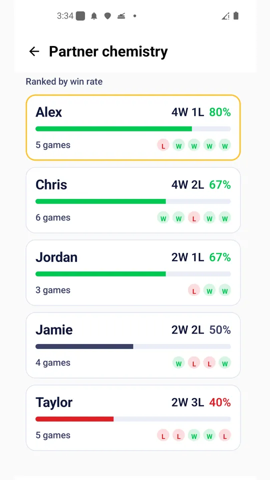
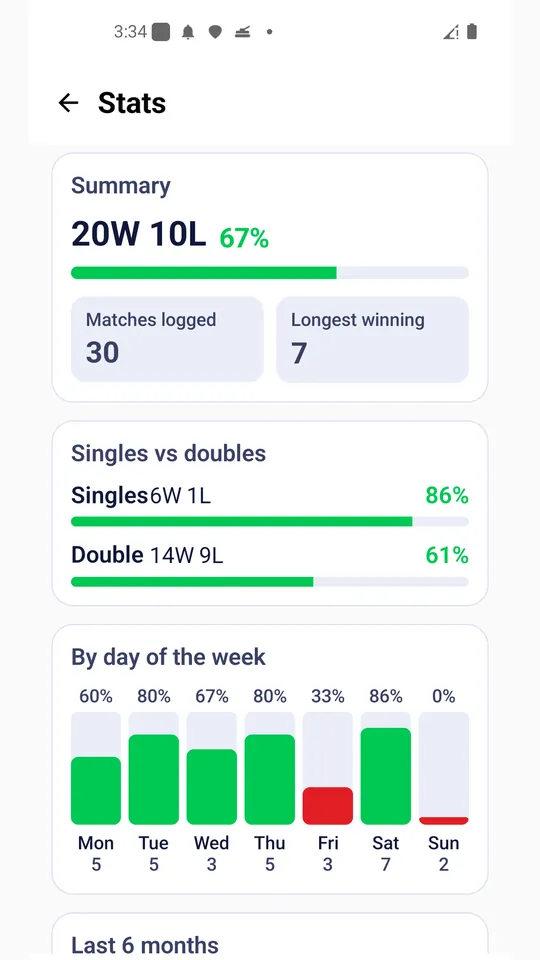
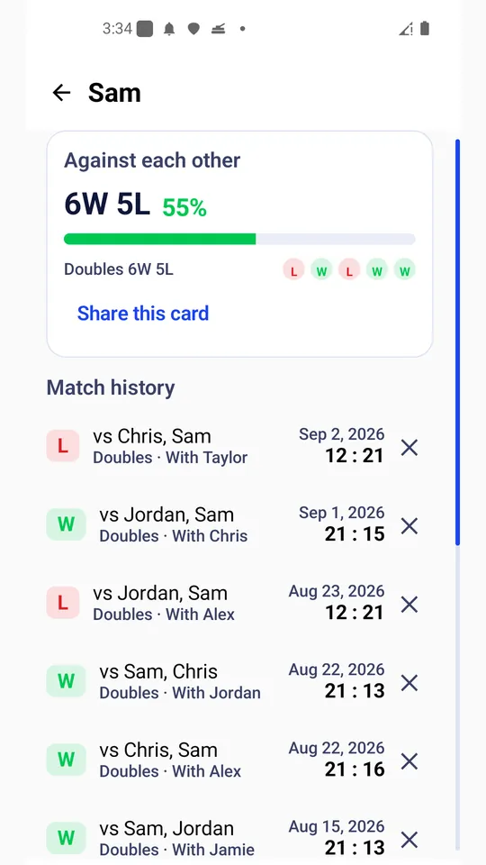

Badminton Log - Match & Stats
Log badminton matches in taps. Head-to-head records and partner win rates.







About this app
- *Ten seconds after the game, it is logged**
Badminton Log keeps the matches you play at your club. Singles or doubles, you pick the people, tap whether you won or lost, and it is saved. Score, note and match date are there only if you want them. The app remembers the format and the partner you picked last time, so a regular club night takes even fewer taps.
- *Head-to-head records**
Every opponent builds up a running record: how many times you played and how many times you won. Open a name and you get your matches against them, the recent run of results, the games you played on the same side, and the full match history in one screen.
- *Doubles partner chemistry**
In doubles, who you are paired with is half the result. The partner screen gathers the matches you played together and ranks each partner by win rate, so "we always seem to win together" turns into an actual number.
- *Stats**
Matches logged, win rate, longest winning run, singles against doubles, results by day of the week, and the last six months. The app does not rate your skill or give you advice. It counts what you entered and shows it back.
- *Share a record card**
Head-to-head and partner records can be turned into an image card and sent straight to your club chat. The card is drawn on your phone and carries an install QR code.
- *Everything stays on this phone**
No login, no account, no server. Matches and people are stored on the device only and are never uploaded anywhere. Recording and stats keep working in airplane mode, and settings let you erase everything at once.
- *Weekly reminder**
Once a week, a quiet nudge asking whether anything is missing from your log. You can turn it off in settings.
- *Made for**
- Club players who want a badminton log after the regular session
- Anyone who keeps wondering what the score is against a certain rival
- Doubles players who want to see which partner actually works
- Anyone who started a paper notebook and gave up on it
Korean and English are supported. The app is free and shows banner and interstitial ads, with no in-app purchases. It is an independent record keeper, not affiliated with any federation or association, and it does not provide rule explanations or umpiring decisions.
Android · free with ads · Developer: RealTunaLove · Store listing in 17 languages
Background story: why I built it